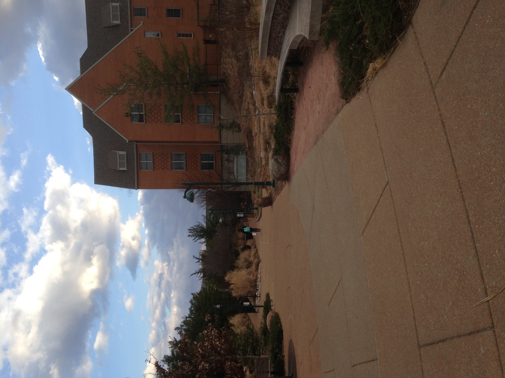

Welcome Incoming Freshmen!
You made it! After months of applying to more colleges than you could keep track of, the anguish of awaiting a reply, the joy of acceptance, and finally the grueling decision of where you will spend the next four years of your life, you're here. Unless you've lived under a rock for the past 18 years, you've probably heard a bit about what to expect from college. Some of it has probably been quite exciting, but some of it has also probably been quite concerning. You've just spent the last four years of your life climbing the ladder to become a Senior in high school, and now you're back as freshmen again, full of questions about what to expect. And what better place to start with those questions than getting answers from the very students that currently attend Washington University?!
For information on the Wash U social scene, teachers and classes, or the city of St. Louis, click on one of the buttons above. To learn about where freshman spend their first year at Wash U, continue reading!
Dorm Life
One question you might be having is "where on campus will I be living?" That's a great question! Here are all the different residential options for freshmen. Click the name of each building to visit its corresponding page on the Washington University Residential Life's webpage.